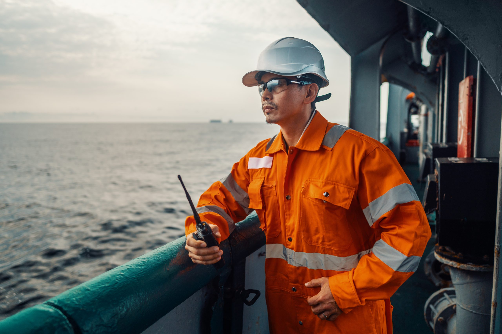

Duties can include sweeping, washing, buffing and painting the deck, performing maintenance on the gear that handles cargo, as well as running and rigging gear, and launching and recovering the lifeboats and life rafts. They will also handle ropes and wires and make sure that any cargo onboard is secure.